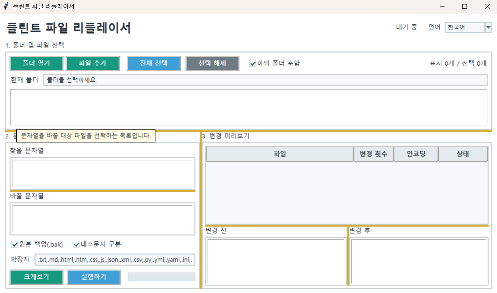

플린트 파일 리플레이서
버전: 1.0.0
사용 방법
폴더 열기를 눌러 작업할 폴더를 선택합니다.- 목록에서 변경할 파일을 선택합니다.
찾을 문자열과바꿀 문자열을 입력합니다.- 오른쪽 미리보기에서 실제로 변경되는 파일과 변경 전·후 내용을 확인합니다.
- 필요한 경우
크게보기를 눌러 선택한 파일의 변경 전·후 내용을 별도 창에서 크게 확인합니다. 실행하기를 눌러 문자열을 변경합니다.
찾을 문자열이나 바꿀 문자열을 입력하면 미리보기가 자동으로 갱신됩니다.
변경할 내용이 없는 파일은 결과 목록에 표시되지 않습니다.
원본 백업(.bak)을 켜면 변경 전에 파일 옆에.bak백업 파일이 생성됩니다.
주요 기능
- 여러 파일의 문자열 일괄 변경
- 변경 전·후 자동 미리보기
- 실제 변경 대상 파일만 결과에 표시
- 변경 위치 강조 표시
- 선택 파일 변경 전·후 크게보기
- 하위 폴더 포함 검색
- 파일 확장자 필터
- 대소문자 구분 선택
- UTF-8, UTF-16, CP949, EUC-KR 인코딩 지원
- 원본 파일 자동 백업
실행:
python replacer.py
참고:실행 파일(EXE) 버전을 사용하는 경우에는 python 명령을 실행할 필요가 없습니다.